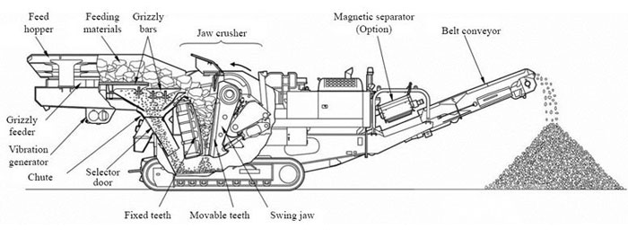

Mobile Crusher
- Type:Crusher Machine
- Model:Mobile Crusher
- Trademark:SBM
- Certificate:ISO9001: 2000
- Origin:China
- Generator:150-450W
Mobile Crusher Station
Mobile crusher station is my company to meet market demand, independent research and development of full hydraulic drive tracked vehicle screening equipment broken by mobile site walk. With high performance, high reliability, handsome in appearance, reaching the level of the international similar products. High performance crusher series, with the site full hydraulic drive tracked vehicle, and high performance integrated feeder crusher, vibrating screen, belt machine, car crusher integration under the sieve belt machine, installation, vehicle mounted motor and control box integration.
Mobile crusher station include mobile jaw crusher, mobile impact crusher,mobile cone crusher and mobile screening plant. They are widely used in road urban construction, building, metallurgy, energy and other departments, for crushing, screening and other operations. We can according to the different needs of different customers to flexible configuration of a one-stage crushing, level two and level three broken broken, at the same time to all levels of crushing and screening of combinatorial optimization, we will try our best to meet customer demand.
Mobile crusher is a crushing apparatus for high efficiency, by using a self drive mode, advanced technology, complete functions. In any terrain conditions, any position of this equipment can reach the work site. This can reduce the material handling operation is convenient, and all auxiliary mechanical equipment coordination. Manipulated by the wireless remote control, you can very easily to the crusher to the trailer, and delivering them to the work place. Because without the assembly time, so the equipment to the job site can be put to work immediately. Station broken than large crushing tracked mobile, the optimization design can meet the needs of crushing technology characteristics, machine are most in need of high productivity, product granularity uniformity.
Mobile Crusher working principle
Mobile crusher can be according to the material type and the coarse crushing, fine crushing and screening system choice, can be a single group of Raiders work independently, can also be flexible system configuration unit combined operation. The mobile crushing station as the integration of group work, the site can carry out the first line of material crushing, eliminates the material is removed from the site and then crushing, processing the intermediate links, greatly reduce the transportation cost of material.
Mobile crusher plant flexible configuration, can according to the actual design or special mobile crusher station, very suitable for construction waste crushing. In addition, the use of mobile crusher station completely have the characteristics of environmental protection and energy saving, the production process to reduce the noise, reduce dust and many other pollution factors have been solved properly. Station of large processing capacity of crushing, the maximum to meet the needs of construction waste disposal. The mobile crushing station used in construction waste crushing processing applications more widely, at present, the comprehensive utilization of construction waste projects have been put into use in the country, investment prospects.
Technical Data
| Model Parameter | YG935E69 | YG1138E71L | YG1138EW86L | YG1138FW1315ⅡL |
| Feeder Model | GZD960×3500 | GZD1100×3800 | GZD1100×3800 | GZD1100×3800 |
| crusher Model | PE600X900 | PE750X1060 | PEW860 | PFW-1315II |
| Main belt Model | B800X8.5M | B1000X9M | B1000X9M | B1000X9M |
| Side of the belt conveyor Model | B450X3M | B500X3.5M | B500X3.5M | B500X3.5M |
| Power（kw） | 180 | 250 | 200 | 300 |
| TransportationDimension（mm） (L×W×H) | 11900×3100×3650 | 11900×3100×3650 | 13300×3100×4500 | 13300×3100×4500 |
| Jobs Dimension（mm） (L×W×H) | 12100×3100×4100 | 12100×3100×4100 | 13500×3100×5100 | 13500×3100×4800 |
Get Price And Support
Simply complete the form below, click submit, you will get the price list and a SBM representative will contact you within one business day. Please also feel free to contact us by email or phone. ( * Denotes a required field).